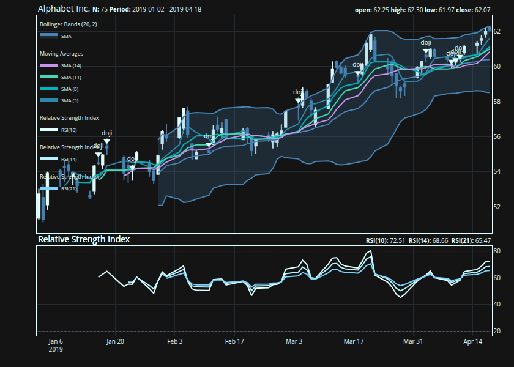

{talib} provides fast R bindings to the TA-Lib C library for OHLCV data: technical indicators, candlestick pattern recognition, rolling-window utilities, and composable financial charts. It is designed for researchers, analysts, and quant developers who need technical-analysis features in R without building a heavy dependency stack. Core computations are executed in C through .Call(), while charting support is available through optional {plotly} and {ggplot2} integrations.1
The API covers 150+ TA-Lib-backed functions across momentum, overlap, volatility, volume, cycle, price-transform, rolling-statistics, and candlestick-pattern families, including 61 candlestick pattern detectors.
Why {talib}?
| Need | {talib} |
|---|---|
| Technical indicators | TA-Lib-backed moving averages, momentum, volatility, volume, cycle, and overlap studies |
| Candlestick patterns | Built-in Japanese candlestick pattern recognition |
| OHLCV workflows | Works directly with open, high, low, close, and volume columns |
| Performance | Computation delegated to C routines through .Call()
|
| Dependencies | Minimal required R dependencies; plotting packages are optional |
| Charts | Composable financial charts with optional plotly and ggplot2 support |
Installation2
Install the release version from CRAN:
install.packages("talib")Install the development version from GitHub:
pak::pak("serkor1/ta-lib-R")Quick start
All functions provide S3 methods for <data.frame>, <matrix>, and—where applicable—<vector> inputs. The general convention is simple: the output uses the same container type as the input.
## calculate the
## relative strength index
relative_strength_index <- talib::RSI(
talib::BTC
)
## display results
tail(
relative_strength_index
)
#> RSI
#> 2024-12-26 01:00:00 46.48851
#> 2024-12-27 01:00:00 43.85488
#> 2024-12-28 01:00:00 45.93888
#> 2024-12-29 01:00:00 43.12301
#> 2024-12-30 01:00:00 41.47686
#> 2024-12-31 01:00:00 43.37358Indicator outputs preserve input length, which keeps results aligned with the original OHLCV rows.
## combine multiple
## indicators
features <- cbind(
talib::relative_strength_index(talib::BTC),
talib::bollinger_bands(talib::BTC),
talib::engulfing(talib::BTC)
)
tail(features)
#> RSI UpperBand MiddleBand LowerBand CDLENGULFING
#> 2024-12-26 01:00:00 46.48851 100487.38 96698.61 92909.83 -1
#> 2024-12-27 01:00:00 43.85488 100670.65 96512.96 92355.27 0
#> 2024-12-28 01:00:00 45.93888 100632.13 96581.91 92531.69 0
#> 2024-12-29 01:00:00 43.12301 99628.77 95576.60 91524.43 -1
#> 2024-12-30 01:00:00 41.47686 96403.53 94231.31 92059.09 0
#> 2024-12-31 01:00:00 43.37358 95441.13 93774.23 92107.34 0Charting
{talib} comes with a composable charting API built on two core functions: indicator() and chart()—both functions are built on model.frame for maximum flexibility:
## subset data and
## store as 'BTC'
BTC <- talib::BTC[1:75, ]
## construct chart in a brace block
## alternatively use `|>`
{
## initialize main chart
talib::chart(
x = BTC,
title = "Bitcoin"
)
## add Bollinger Bands to
## the existing chart
talib::indicator(
talib::BBANDS
)
## add Simple Moving Averages (SMA)
## to the chart in a loop
for (n in seq(5, 15, by = 3)) {
talib::indicator(
talib::SMA,
n = n
)
}
## similar subchart indicators
## like the Relative Strength Index
## can be grouped to avoid repeated
## subpanels
talib::indicator(
talib::RSI(n = 10),
talib::RSI(n = 14),
talib::RSI(n = 21)
)
## identify Doji patterns
## and add them to the chart
talib::indicator(
talib::doji
)
}
Implementation: {talib} vs upstream (TA-Lib Core)
Functions use descriptive snake_case names, but every function is aliased to its TA-Lib shorthand for compatibility with the broader ecosystem:
| Category | TA-Lib (C) | {talib} | {talib} alias |
|---|---|---|---|
| Overlap Studies | TA_BBANDS() |
bollinger_bands() |
BBANDS() |
| Momentum Indicators | TA_CCI() |
commodity_channel_index() |
CCI() |
| Volume Indicators | TA_OBV() |
on_balance_volume() |
OBV() |
| Volatility Indicators | TA_ATR() |
average_true_range() |
ATR() |
| Price Transform | TA_AVGPRICE() |
average_price() |
AVGPRICE() |
| Cycle Indicators | TA_HT_SINE() |
sine_wave() |
HT_SINE() |
| Pattern Recognition | TA_CDLHANGINGMAN() |
hanging_man() |
CDLHANGINGMAN() |
Interface: R vs Python
The main difference between the R and Python interfaces is how OHLCV series are passed into each indicator function. Below is an example of identifying Doji patterns in R and Python.
In Python, each series is passed independently:
import numpy as np
import talib
o = np.array([1, 1, 1, 1, 1, 1, 1, 1, 1, 1, 1], dtype=float)
h = np.array([2, 2, 2, 2, 2, 2, 2, 2, 2, 2, 2], dtype=float)
l = np.array([1, 1, 1, 1, 1, 1, 1, 1, 1, 1, 1], dtype=float)
c = np.array([2, 2, 2, 2, 2, 2, 2, 2, 2, 2, 1], dtype=float)
print(
talib.CDLDOJI(o, h, l, c)
)In R the series are passed as a tabular container:
ohlc <- data.frame(
open = c(1, 1, 1, 1, 1, 1, 1, 1, 1, 1, 1),
high = c(2, 2, 2, 2, 2, 2, 2, 2, 2, 2, 2),
low = c(1, 1, 1, 1, 1, 1, 1, 1, 1, 1, 1),
close = c(2, 2, 2, 2, 2, 2, 2, 2, 2, 2, 1)
)
talib::CDLDOJI(
ohlc
)All default series arguments are handled internally, and the R interface is therefore higher-level: users pass one OHLC container rather than manually splitting the series.
Contributing and cloning
Contributions are welcome. For non-trivial changes, please open an issue first to discuss the proposed design, API impact, and testing approach.
This repository vendors TA-Lib as a Git submodule. Clone the repository with submodules enabled:
If you already cloned the repository without submodules, initialize them with:
Most indicator wrappers, helper functions, documentation fragments, and unit tests are generated from the scripts in codegen/. The charting interface is maintained separately.
Common development tasks are exposed through Make targets:
See CONTRIBUTING.md for the full development workflow.
Code of Conduct
Please note that {talib} is released with a Contributor Code of Conduct. By contributing to this project, you agree to abide by its terms.